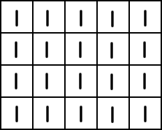
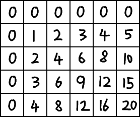
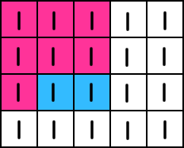
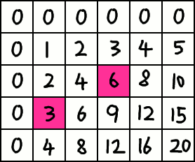

2D Prefix Sum Array
The 2D Prefix Sum Array handles queries for the sum of a rectangular region on a grid (2D array).
The underlying structure is a simple 2D array of size [C + 1][R + 1], where C and R are the respective sizes of the original array.
Say we have this grid, full of 1s.
The prefix sum array would look like.
ps[c][r], contains the sum of the region \([(0, 0), (c - 1, r - 1)]\). ps[3][3] has a value of 9.

Say we only wanted the sum of the region \([(1, 2), (2 ,2)]\). We would have an extra region, highlighted in red.
We must subtract the region. However, when we use two rectangles to subtract the region, we have subtracted another rectangular region an additional time. Thus, we must add it back.
Our final expression for the sum is: ps[3][3] - ps[1][2] - ps[2][2] + ps[0][1] = 9 - 3 - 6 + 2 = 2
A generalized formula for the sum of a rectangle \([(c_1, r_1), (c_2, r_2)]\) is ps[c2 + 1][r2 + 1] - ps[c1][r2 + 1] - ps[c2 + 1][r1] + ps[c1][r1]
Construction
Construction is done iteratively from top to bottom, left to right. At each point, the respective rectangular region excluding the right-bottommost square is summed, and added to the right-bottommost square from the original array. Green represents the already calculated sums. Gold is the current square.

Similar to summing up a rectangular region, there will be a repeated region which will be subtracted.

Implementation
Construction of a 2D prefix sum array ps from array a of size C by R.
int[] ps = new int[C + 1][R + 1];
for(int r = 1; r <= R; r++) {
for(int c = 0; c <= C; c++) {
ps[c][r] = ps[c - 1][r] + ps[c][r - 1] + a[c - 1][r - 1];
}
}
Query sum of rectangular region with left-top corner at \((c_1, r_1)\) and bottom-right corner at \((c_2, r_2)\).
public static int sum(int c1, int r1, int c2, int r2) {
return ps[c2 + 1][r2 + 1] - ps[c1][r2 + 1] - ps[c2 + 1][r1] + ps[c1][r1];
}
Alternatively, if the rectangular region is represented by \([(c, r), (c + w + 1, r + h + 1)]\). \((c, r)\) is the starting square, and the rectangle is \(w\) square wide and \(h\) squares high.
public static int sum(int c, int r, int w, int h) {
return ps[c + w + 1][r + h + 1] - ps[c][r + h + 1] - ps[c + h + 1][r] + ps[c][r];
}
Time Complexity
Construction: \(\mathcal{O}(CR)\)
Sum Query: \(\mathcal{O}(1)\)
Space Complexity
\(\mathcal{O}(CR)\)
The 2D prefix sum array is slightly more complicated than the 1D version, but still very fast. How about 3D prefix sum arrays?